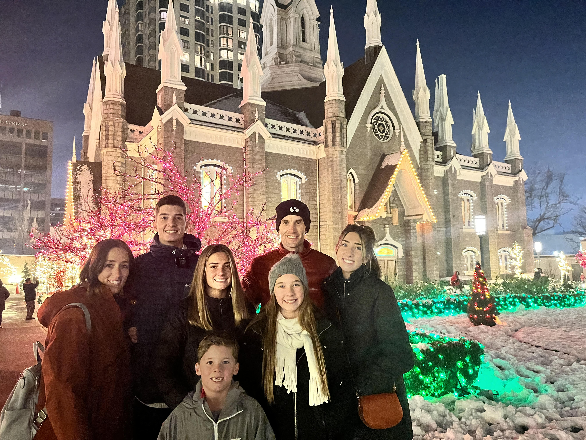

About Me
Abby Meck is a full time student at Brigham Young University and currently lives in Provo, Utah. She is the oldest of 5 kids and has a pet dog. She has lived in 5 different states, from the east coast to the west coast. She loves hiking, skating, playing sports, and shopping. Below, you will find her résumé and skills. Check it out!
Résumé
Education
Brigham Young University | Aug 2019 - present
ExDM Major | Provo, UT
- GPA 3.7
Skyridge High School | 2015 - 2019
- GPA 3.99/4.00
- Received High Honor Roll
- Lettered in academics and varsity track
- Member of National Honor Society 2018-2019
Experience
BYU Science Support Shop | Aug 2019 - May 2020
Office Assistant | Provo, UT
- Managed department budget and tracked expenses
- Worked with customers who needed instruments repaired
- Coordinated procurement and distribution of supplies
Western Governors University | Jun 2019 - Aug 2019
Intern | Murray, UT
- Worked in the Health Placement field
- Helped students register for courses required for their Master of Science in Nursing degrees by interacting with them through emails
- Learned how to work in an office setting and communicate effectively on a team
Trailside Professional Dry Cleaners | Jun 2017 - Jun 2019
Clerk | Lehi, UT
- Responsibilities included detailing clothes, delivering dry cleaning, and reconciling cash and credit payments
- Interacted with customers to resolve service issues
Skills & Interests
- Fluent in Spanish
- Self-motivated
- Participated in high school track and earned most valuable high jumper both in 2018 and 2019; took second place in the high jump at Utah state in 2018
- In 2016, received MVP award for basketball: worked hard, showed leadership, led district champion team
- Participated in school choir from 2014 to 2018
Contact Info
Phone: (385) 999-9999
Email: abigail.meck@gmail.com
Brigham Young University - Home Page Back to Top